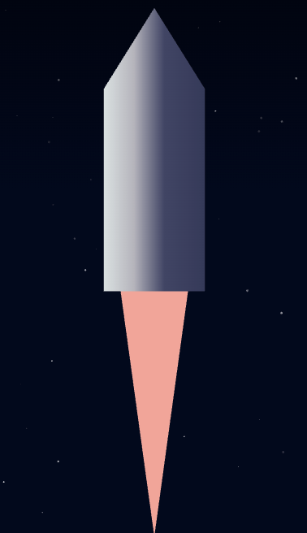
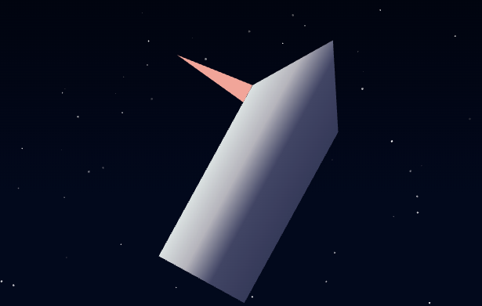
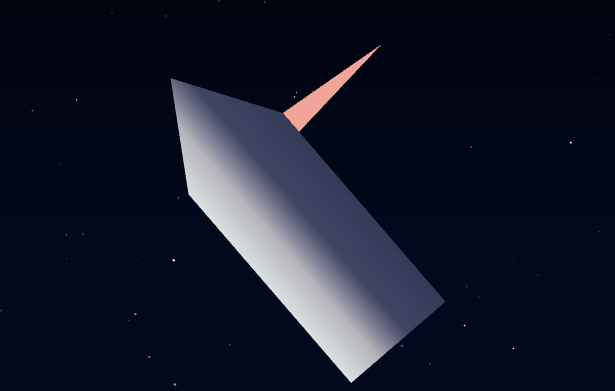

CodeMos API Documentation
CodeMos는 추락하는 우주선을 안전하게 착륙시키는 게임입니다.
어떠한 상황에서도 안전하게 착륙하는 알고리즘을 작성해보세요.
INDEX
Description
- 하단의 버튼으로 API 페이지와 코드 에디터를 열고 닫을 수 있습니다.
- 코드를 모두 작성한 뒤, Apply 버튼을 눌러, 우주선에 착륙 알고리즘을 주입할 수 있습니다.
- 착륙 속도 12.0 MPH, 착륙 각도 11.0° 미만일 때 착륙으로 간주합니다.
- 키보드 방향키로 우주선을 작동시켜 볼 수 있습니다. 단, 키보드로 착륙한 결과는 순위표에 등재되지 않습니다.
Tip
1. JS ES6의 모든 문법을 사용해 CodeMos 우주선 알고리즘을 작성할 수 있습니다.
2. 알고리즘이 작동하지 않는다면 코드를 잘못 짠게 아닐지 고민해 보세요.
3. 버그가 발견되었다면 이스터에그입니다.
Getting Started
main loop
CodeMos 알고리즘에서 main loop는 아래와 같이 "newInterval"에 할당되어야 합니다.
"newInterval"에 할당하지 않고 setInterval을 호출할 시 초기화 오류가 발생할 수 있습니다.
interval 간격은 수정할 수 있습니다.
// TODO:
newInterval = setInterval(() => {
// TODO:
}, 1); // 1ms loop
// TODO:
// 잘못된 예시
setInterval(() => {
// 어쩌구 저쩌구
}, 1);
알고리즘 작성 예시
전역 스코프에서 함수와 변수를 정의할 수 있습니다.
아래는 착륙 알고리즘 예제 입니다.(고득점 불가)
var targetHeight = 0; // 착륙 고도
function engineCtrl() { // 고도에 따라 엔진 control
if (getVelocityY() * 5 >
(getHeight() - targetHeight))
engineOn();
else
engineOff();
}
newInterval = setInterval(() => { // main loop
if (getAngle() > 0) { // 우주선 각도 조정
stopRightRotation();
rotateLeft();
} else {
stopLeftRotation();
rotateRight();
}
engineCtrl();
}, 1);
잘 짠 착륙 알고리즘 예시
// 비밀~

by 조영효
Get Methods
getVelocityX
이 함수는 우주선의 현재 수평 속도를 실수형으로 반환합니다.
- 음수 : 우주선이 좌로 이동 중
- 양수 : 우주선이 우로 이동 중
getVelocityY
이 함수는 우주선의 현재 수직 속도를 실수형으로 반환합니다.
- 음수 : 우주선이 위로 이동 중
- 양수 : 우주선이 아래로 이동 중
getAngle
이 함수는 우주선의 현재 각도를 실수형으로 반환합니다.(-180.0 ~ +180.0)

getHeight
이 함수는 우주선의 현재 고도(ft, 피트)를 정수형으로 반환합니다.
착륙지점의 고도는 0ft 입니다.
getRotationVelocity
이 함수는 우주선의 현재 각속도를 실수형으로 반환합니다.
- 음수 : 우주선이 반시계 방향으로 회전 중
- 양수 : 우주선이 시계 방향으로 회전 중
Set Methods
engineOn
이 함수를 호출하면 우주선의 주 엔진을 작동시킵니다.

engineOff
이 함수를 호출하면 우주선의 주 엔진을 정지합니다.
rotateLeft
이 함수를 호출하면 우주선의 좌측 추진체을 작동합니다.
(우주선의 각속도가 증가합니다.)

stopLeftRotation
이 함수를 호출하면 우주선의 좌측 추진체을 정지합니다.
rotateRight
이 함수를 호출하면 우주선의 우측 추진체을 작동합니다.
(우주선의 각속도가 감소합니다.)

stopRightRotation
이 함수를 호출하면 우주선의 우측 추진체을 정지합니다.
Utility Methods
logging
이 함수는 Get Method 들의 반환값을 console에 표시합니다.
logging()
/*
f12 -> [console output]
getVelocityX() : 11.39214005489352
getVelocityY() : 27.95145243876781
getAngle() : -60.2
getHeight() : 239
getRotationVelocity() : 0.37505750000014804
*/
TMI
1. CodeMos 행성은 중력(4.29158 m/s²) 외에는 어떠한 힘도 작용하지 않습니다.
2. 주 엔진 thrust : Δ10.729 m/s
3. 좌, 우측 엔진 thrust: Δ1.2 각속도/s
4. 착륙 속도 0.0 MPH, 착륙 각도 0.0° 일 때, 100점을 획득합니다.